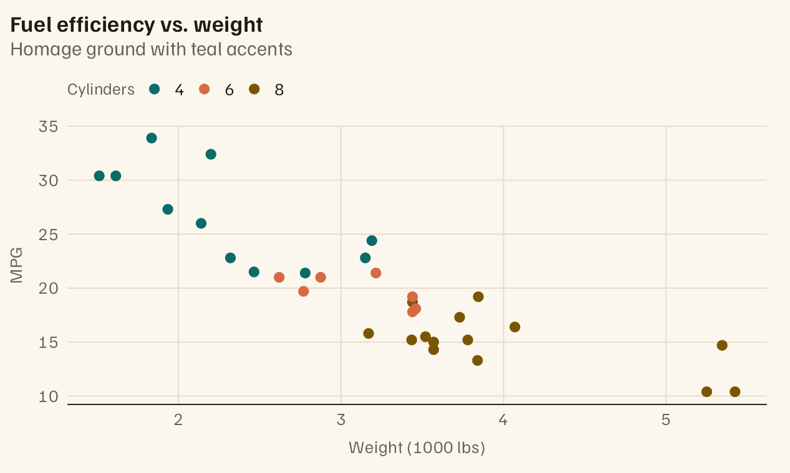

What this page proves
This is a full page in the Homage direction (warm
cream ground, Newsreader serif body, light code) with the
teal family. The accents — links, the nested-square
marker, the code rule, and the plot palette — all shift to teal while
the warm ground and serif type stay put. Compare it against
vignette("getting-started") (homage + red) to see the
family swap in isolation.
TIP: A direction and a family are independent. Keep the direction for mood, change the family for accent character.
Code on a light ground
albersdown::albers_palette("teal")
#> A900 A700 A500 A300
#> "#0D4A4A" "#0F5E5E" "#127373" "#2F8C8C"Inline tokens like theme_albers() and
scale_color_albers() stay legible against the warm
surface.
A table
knitr::kable(
head(mtcars[, c("mpg", "wt", "hp", "cyl")]),
caption = "Teal accents on the table header rule."
)| mpg | wt | hp | cyl | |
|---|---|---|---|---|
| Mazda RX4 | 21.0 | 2.620 | 110 | 6 |
| Mazda RX4 Wag | 21.0 | 2.875 | 110 | 6 |
| Datsun 710 | 22.8 | 2.320 | 93 | 4 |
| Hornet 4 Drive | 21.4 | 3.215 | 110 | 6 |
| Hornet Sportabout | 18.7 | 3.440 | 175 | 8 |
| Valiant | 18.1 | 3.460 | 105 | 6 |
A plot on the matching ground
ggplot(mtcars, aes(wt, mpg, colour = factor(cyl))) +
geom_point(size = 2.3) +
albersdown::scale_color_albers(family = params$family) +
labs(
title = "Fuel efficiency vs. weight",
subtitle = "Homage ground with teal accents",
x = "Weight (1000 lbs)", y = "MPG", colour = "Cylinders"
)